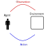
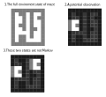

4.rl. Introduction to Reinforcement Learning
목차
- 강화 학습은 무엇인가?
- 핵심 생각들
- Agent의 구성요소
- 강화 학습에 남은 도전들
동기
- 1.물리적 반복 작업에 대한 자동화
- 산업혁명 - 생산라인 등
- 2.정신적 반복 작업에 대한 자동화
- 정보화 혁명 - 계산기 등
- 어떻게 하는지 규칙을 정해서 구현 했음.
- 3.기계가 문제에 대한 해법을 자신이 찾음
- AI 혁명
- 결정을 내리는 방법에 대한 자동 학습이 필요해짐
강화 학습이란 무엇인가?
- 주어진 상황에서 최선이라 생각되는 행동을 학습하는 것.
- 상호작용을 통해서 결정을 내리는 법을 학습하는 과학
- 환경과 상호 작용 하면서 학습함.
- 지도 학습과 다른점
- 동적임 (수동적이지 않음)
- 상호작용이 잇따라 일어남 (다음 행동은 이전의 행동에 의존성이 있을 수 있음)
- 목표 지향적임
- 예제 없이 최적 행동 양식을 찾을 수 있음.
- Learn by try and error.
- 사고의 틀과 알고리즘 양쪽 다 지칭
상호작용 loop

상호작용을 통해서 결정을 내리는 법을 학습하는 과학
위의 정의를 달성하기 위해 고려해야 하는 것들 - 시간 - 행동에 대한 결과(장$\cdot$단기적) - 경험의 축적 - 미래에 대한 예측 - 불확실 성에 대한 처리
강화 학습의 특징
다른 학습들과 다른 부분 - 지도 학습이 아님, 보상 신호만 있음 - 피드백이 지연 될 수 있음(즉각적이지 않아도 됨) - 시간이 중요함 - 이전 결정이 이후 상호 작용에 영향을 줌
핵심 생각들
- 환경
- 보상 신호
- Agent
- Agent state
- Policy
- Value function
- Model (Optional)
Agent and Environment
각각의 단계 t 에
- Agent
- Observation $O_{t}$ 을 받음(그리고 보상$R_{t}$ 을 받음)
- 액션을 $A_{t}$ 행함
- The environment
- 액션 $A_{t}$를 받음
- Observation $O_{t+1}$ 을 생성(그리고 보상$R_{t+1}$ 을 생성)
def agent(time, observation, reward):
// 가장 좋은 action 선택
return action
def env(time, action):
// action에 의해 반응한 환경과 보상을 리턴
return (observation, reward)
t = 0
action, observaion, reward = None, None, None
while True:
t++
action = agent(t, observation, reward)
observation, reward = evn(t, action)
보상
- 보상 $R_{t}$는 scalar 값이다.
- Agent 가 step t 에 얼마나 잘했는지에 대한 피드백 신호
- Agent 의 목표는 누적 보상을 최대값으로 만드는 것이다. $$ G_{t} = R_{t+1} + R_{t+2} + R_{t+3} + ... $$
- 우리는 위의 누적 보상을 the return 이라고 할 것이다.
보상 가설
어떠한 목표도 누적 보상을 최대화 시키는 방법으로 형식화 할 수 있다.
Values
특정 상황 s 에서 누적 보상의 기대값을 value 라고 하자.
$$ \begin{align} \mathtt{v}(s) = & \mathbb{E} [ G_{t} | S_{t}=s ] \\ = & \mathbb{E} [ R_{t+1} + R_{t+2} + R_{t+3} + ... | S_{t}=s ] \end{align} $$
- 이제 agent의 목표는 value를 최대화 하는것이라고 재 정의 할 수 있다.
- Reward 그리고 Value 는 특정 상황에서 특정 action 이 얼마나 적합한지의 정도를 나타낸다(지도 피드백이 필요 없다.)
- retuns 와 values 는 재귀로 정의 될 수 있다. $$ G_{t} = R_{t+1} + G_{t+1} $$
순차적 Action들
- value 값을 최대화 하는 actions 을 고르는걸 목표로 하자.
- 이제 agent의 목표는 특정 action들을 선택해서 value를 최대화 하는것이라고 재 정의 할 수 있다.
- actions 는 장기적 결과를 가질 수도 있다.
- 보상은 지연 될 수 있다.
- 장기적 보상을 위해 즉각적인 보상을 포기하는게 좋을 수 도 있다.
- 헬리콥터 연료 충전(몇시간 후 에 추락 할 수 있으니)
- 주식 투자 (장기적으로 이익이 더 올때)
- states 로 부터 actions 로의 맵핑을 policy 라고 한다. $$ \text{policy} = f: \text{states} \to \text{action} $$
Action values
value 의 조건식에 action 을 넣을걸 action value 라고한다.
$$ \begin{align} q(s, a) = & \mathbb{E}[ G_{t} | S_{t}=s, A_{t}=a ] \\ = & \mathbb{E} [ R_{t+1} + R_{t+2} + R_{t+3} + ... | S_{t}=s, A_{t}=a ] \end{align} $$
Agent
State
- Actions는 agent의 state 에 의존성이 있다.
- 행위자와 환경은 각각 내부 state를 가질 수 있다.
- 간단한 예제에서는 state 가 한개 일 수 있다.
- 보통 상태가 엄청 많다. - 가끔씩 무한대의 경우도 있다.
- 행위자의 상태와 환경의 상태는 일반적으로 다르다.
- 행위자는 환경의 모든 상태를 모를 수 있다.
Environment state
- 환경의 내부 상태
- 일반적으로 행위자가 알 수 없다.
- 만약 안다고 해도 상관없는 정보를 많이 가지고 있을 수 있다.
Agent state
- (Observation, action, reward)들의 기록 $$ H_{t} = O_{0}, A_{0}, R_{1}, O_{1}, ... ,O_{t-1}, A_{t-1}, R_{t}, O_{t} $$
- 위의 기록이 행위자의 상태$S_{t}$를 만드는대 사용된다.
- 액션은 상태에 의존성이 있다.
Fully Obervable Environments
행위자가 환경의 전체 상태를 관찰 할 수 있다고 가정 하자. - observation = 환경 상태 - 행위자의 상태가 환경 상태와 같을 수 있다. $$S_{t} = O_{t} = \text{environment state}$$ - 행위자가 Markov decision process 에 있다.
Markov decision processes
MDPs 는 수학적으로 좋은 틀을 제공해준다.
정의
-
아래의 조건을 충족하는 결정 과정을 Markov 라고 한다.
- A decision process is Markov if
- p == probability
- joint probability of r, s given $S_{t}, A_{t}$ is same as given $H_{t}, A_{t}$ $$ p(r,s| S_{t}, A_{t}) = p(r,s| H_{t}, A_{t})$$
-
현재를 주면 미래는 과거로 부터 독립적이다.
- The future is independent of the past given the present $$ H_{t} \to S_{t} \to H_{t+1} $$
- 해당 속성을 만족하는 state 를 알게 되면 기록을 버려도 된다.
- 예를 들어
- stationary 환경 상태는 Markov 이다.
- 기록 $H_{t+1}$는 Markov 이다.
Partially Observable Environments
Agent 가 정보의 일부분만 받는다. - 포커카드 게임 - observation 이 Markov 가 아니다. - patially obsevable Markov decision process (POMDP) - 환경 상태값은 Markov 이지만 행위자가 이걸 알 수 없다.
Agent state
- angent state 는 기록에 대한 함수이다. $$ \text{agent state} = f: H \to S $$
-
행위자의 액션은 상태에 의존한다.
-
State update function == f $$S_{t+1} = f(S_{t},A_{t},R_{t+1},O_{t+1})$$
- 행위자는 t 에 있음
- $S_t$ 를 사용해 $A_t$ 를 결정하고 실행.
- 환경이 $R_{t+1}, O_{t+1}$을 생성.
- 행위자는 이제 $t + 1$ 에 있음
- $S_{t+1}$ 을 $f(S_t, A_t, R_{t+1}, O_{t+1})$ 을 사용해 변경
- 관습적으로 t 는 행위자가 환경에서 액션을 보내는 시점임
-
행위자의 상태는 환경의 상태보다 훨씬 작다.
Example
부분관찰이 가능한 환경에서 행위자의 상태를 만들어보자.

- 행위자는 2번 그림처럼 환경의 일부분을 observation 으로 받는다.
- 만약 $S_{t} = O_{t}$를 사용했다면 3번 그림에서 처럼 두개의 다른 observation을 구분 할 방법이 없다.
- 즉 행위자의 상태가 Markov 가 아닌 상태가 되었다.
- 어떻게 하면 행위자의 상태를 Markov 하게 할 수 있을까?
- agent 가 기록을 사용해 구분 할 수 있는 상태를 만들면 된다.